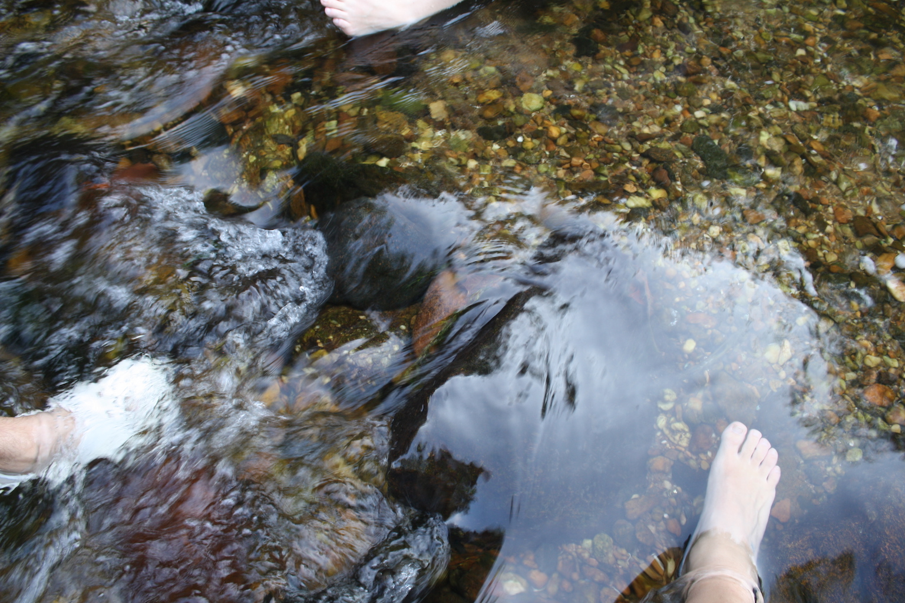
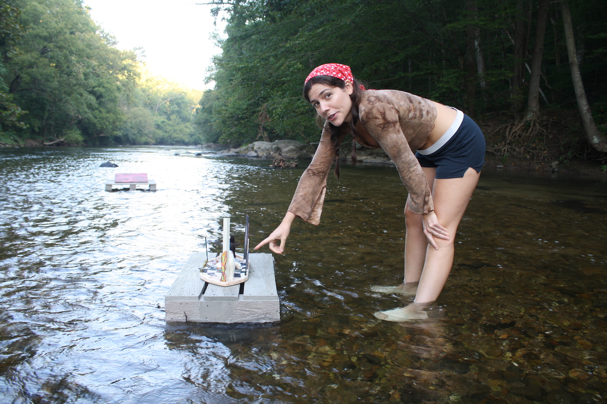
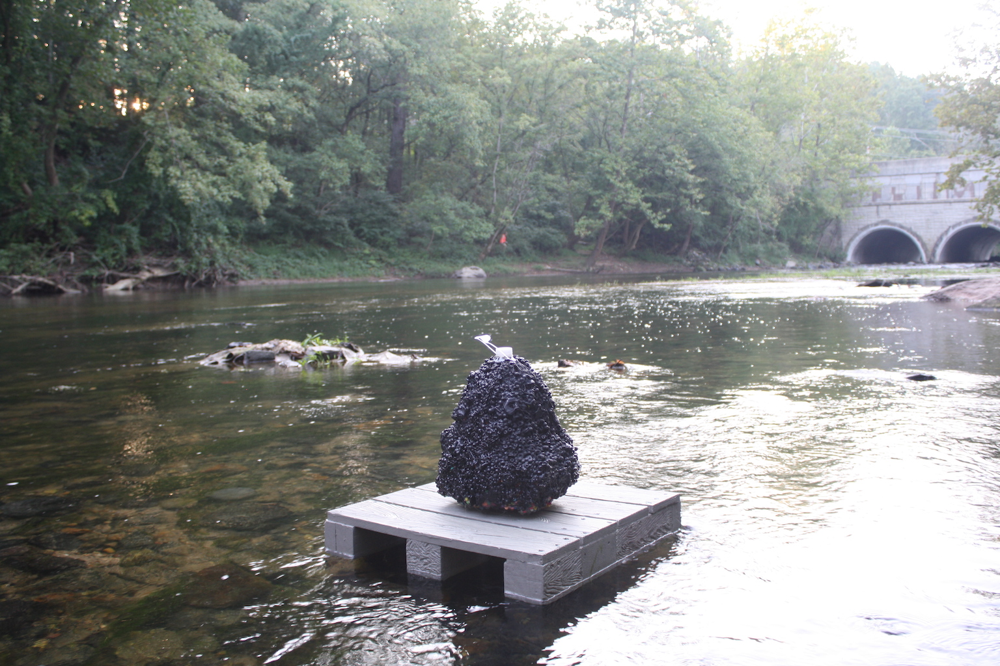

tuber incident   
Pot rocks nightswimmers at dusk
Searching, floating, drifting, skimming, lapping
Washing up on shore
Lazy River
Pippy Longstocking going over a waterfall in a barrel
In the book Orlando, the scene where the town floats down the river after the ice breaks up, scenes of everyday life pass by, headed downstream.
Watching objects warp, expanding and shrinking in size, while underwater
In Winnie the Pooh when they drop pine cones off one side of the bridge and watch them go downstream from the other side